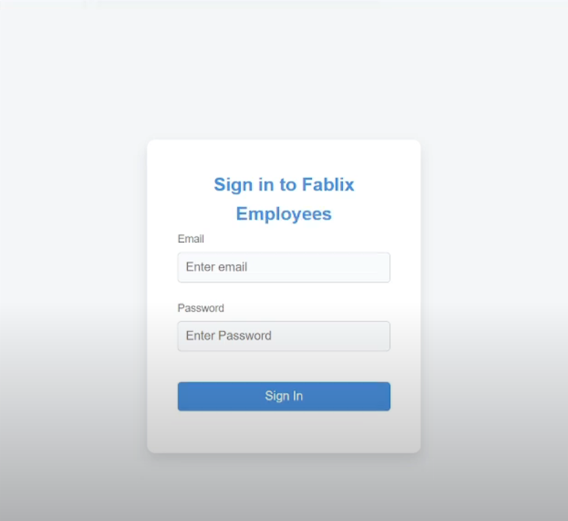
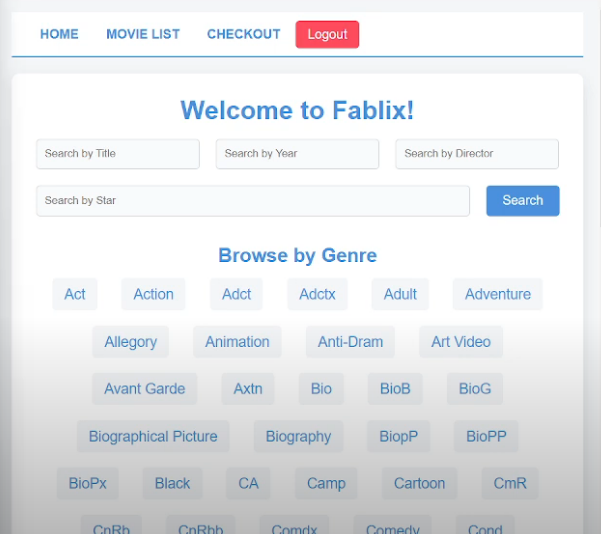
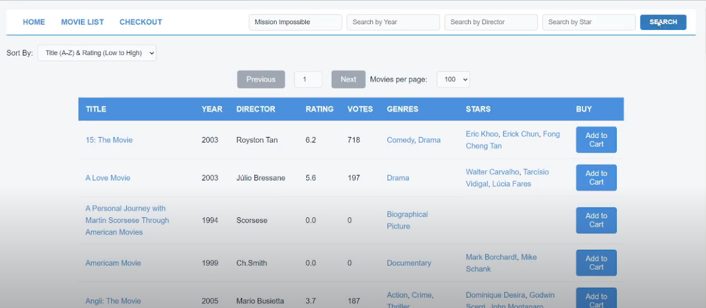
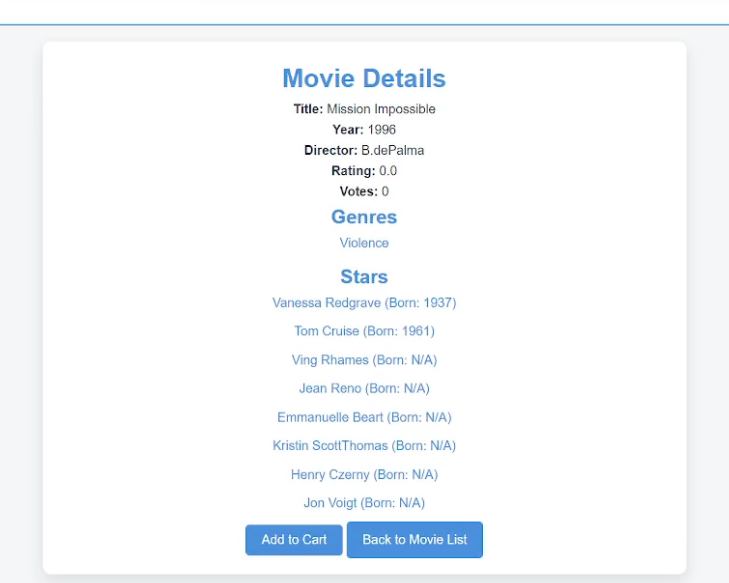

Fablix Movie DB Web App
A full-stack movie database application featuring secure user authentication with SHA-256 encryption, full-text search with AJAX auto-complete, genre/letter browsing, a shopping cart with payment flow, and an admin dashboard — all deployed on AWS with optimized MySQL indexing for 10,000+ records.
The Problem
The project challenged us to build a production-grade web application from scratch: secure authentication, efficient search over a large dataset, session management, payment processing, and cloud deployment — demonstrating full-stack competency across the entire technology stack.
Key Features
Search & Browse
- Full-text search with MySQL FULLTEXT indexing
- AJAX-powered auto-complete with debounced requests
- Browse by genre or alphabetical letter
- Sort by title or rating (ascending/descending)
- Configurable pagination (10/25/50/100 per page)
Security & Infrastructure
- SHA-256 password hashing with salted storage
- Session management with server-side validation
- reCAPTCHA integration on login
- Role-based access control (user vs. admin)
- Deployed on AWS EC2 with RDS MySQL and Tomcat
E-Commerce Flow
- Movie detail pages with metadata and cast information
- Shopping cart with quantity adjustment and removal
- Payment form with client-side and server-side validation
- Order confirmation with transaction history
Performance
- Optimized FULLTEXT indexes reduced search from 250ms to 80ms
- Connection pooling for database efficiency
- AJAX navigation eliminates full-page reloads
- Handles 10,000+ movie records smoothly
Tech Stack
Java (Servlets)
MySQL
Apache Tomcat
jQuery / AJAX
HTML / CSS
AWS EC2 / RDS
REST APIs
Screenshots




Challenges & Solutions
- Search performance: Naive LIKE queries on 10K+ records were too slow. Adding FULLTEXT indexes and switching to MATCH…AGAINST queries reduced average response time by 68%.
- Auto-complete UX: Firing a search on every keystroke overwhelmed the server. I implemented client-side debouncing (300ms) and result caching to keep the experience snappy.
- AWS deployment: Configuring EC2 security groups, RDS networking, and Tomcat SSL termination was my first hands-on cloud deployment. Documenting each step made subsequent deployments routine.
- Session security: Preventing session hijacking required server-side session validation on every request, not just cookie presence.
Outcomes
- Fully functional application deployed on AWS handling search, auth, cart, and payment.
- Search optimization reduced average query time from 250ms to 80ms.
- Gained practical experience with cloud deployment, database optimization, and security best practices.
Lessons Learned
- Database indexing strategy should be designed alongside the query patterns, not as an afterthought.
- Security must be layered: hashing alone isn't enough without proper session management and input validation.
- Cloud deployment introduces an entire class of networking and configuration challenges that local development doesn't prepare you for.
Future Improvements
- Mobile-responsive redesign of the front-end.
- Migration to Elasticsearch for advanced filtering and relevance scoring.
- Containerized deployment with Docker for reproducible environments.
- Modern front-end framework (React) replacing jQuery.